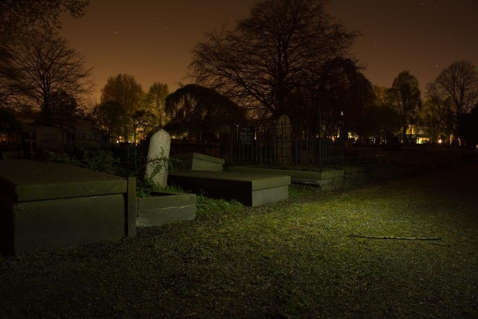
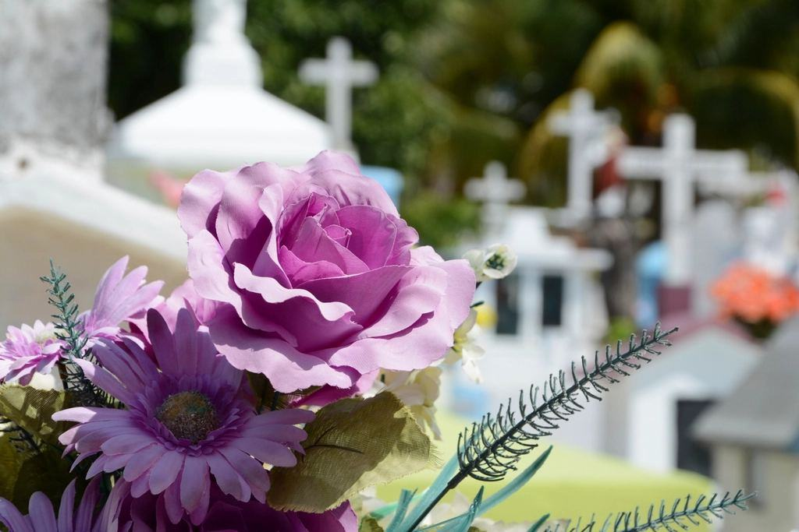
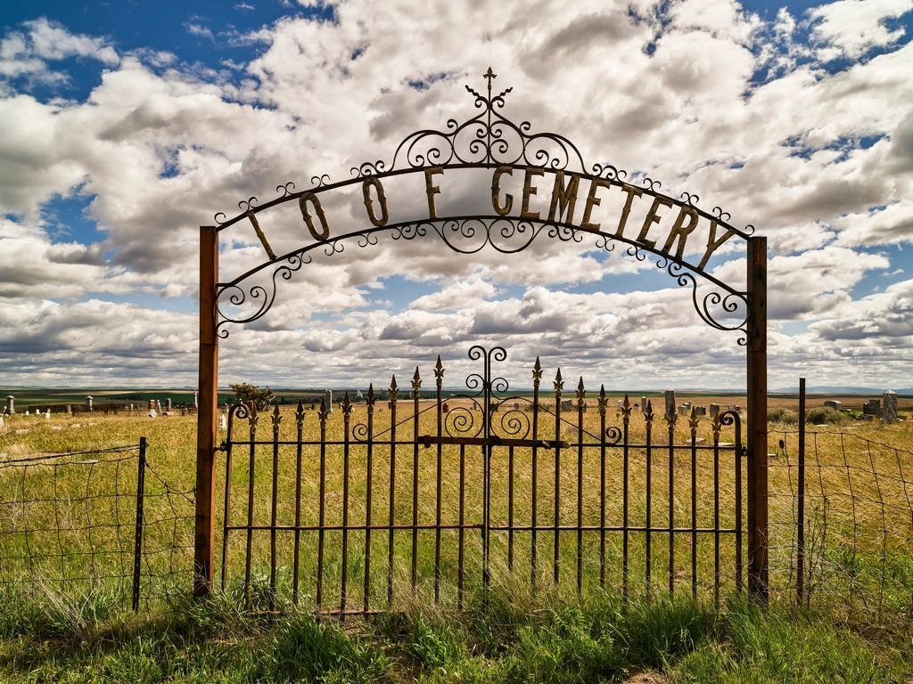

Tjänster
I dag är vi 32 medarbetare i Karlstad, Sunne och Arvika och ordnar omkring 820 begravningar om året. Ungefär 40 procent av ceremonierna hålls i Älvsalen.
Hur vill ni ta farväl?

Älvsalen
Ceremonihallen ligger i ett tegelhus från 1890-talet på Älvgatan, med stora fönster mot Klarälven. Den har flygel, mixerbord, projektor och ett kistbord som kan sänkas för den som vill ta farväl vid kistan.
Salen har ingen religiös symbolik, men kors, halvmåne eller andra symboler kan ställas fram.

Borgerliga ceremonier
Våra tre officianter skriver och leder omkring 300 borgerliga ceremonier om året. De träffar familjen före och bygger ceremonin kring berättelser, musik och tystnad.
Officianterna kan även leda ceremonier i hem, trädgårdar och föreningslokaler.

Kyrkliga begravningar
Över hälften av våra begravningar är kyrkliga, i Karlstads domkyrka, Fryksände kyrka, Arvika nya kyrka och ett femtiotal landsortskyrkor. Vi har nära samarbete med pastoraten i Karlstad, Sunne och Arvika.
Minnesstunden kan hållas i Älvsalen även när ceremonin varit i kyrkan.

Byråerna i Sunne och Arvika
Sunne är där allt började, och byrån där har kvar sin gamla lokal vid torget. I Arvika öppnade vi 2019 och tar uppdrag ända upp till Glaskogen och norska gränsen.
Familjer i Fryksdalen och västra Värmland kan också boka Älvsalen.
Från livsåskådning till ceremoni
- 1

Kyrka eller sal?
Vi börjar med att fråga vilken livsåskådning den som dött hade och vad familjen känner sig hemma i.
- 2

Se lokalen
Familjer som funderar på Älvsalen får komma och se den, sitta i bänkarna och höra hur flygeln låter.
- 3

Officianten
Väljer ni en borgerlig ceremoni träffar ni officianten en eller två gånger för att bygga ceremonin.
- 4

Dagen i salen
Värdarna tar emot gästerna, teknikern sköter ljud och bild och rådgivaren håller ihop allt.
Godkända för ceremoni och sändning
- Tre auktoriserade byråerAlla tre byråer är auktoriserade av Sveriges Begravningsbyråers Förbund.
- Brandskydd och tillgänglighetÄlvsalen är godkänd för 180 personer och anpassad för rullstol och hörselslinga.
- STIM-licensLicens för musik och livesändning från Älvsalen.
- Villkor enligt branschenAvtalen följer bestämmelserna för begravningstjänster som tagits fram med Konsumentverket.